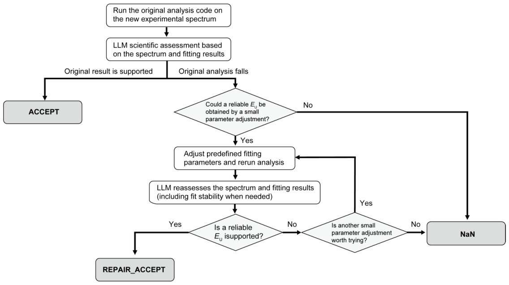
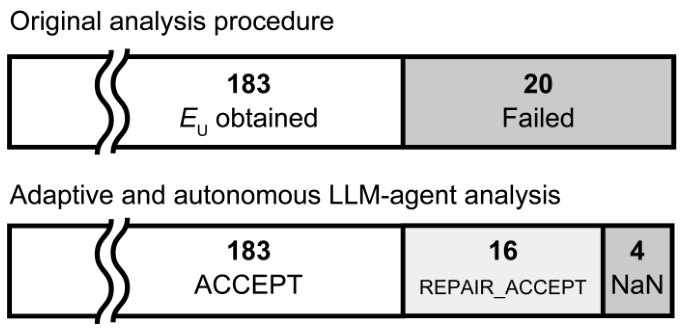
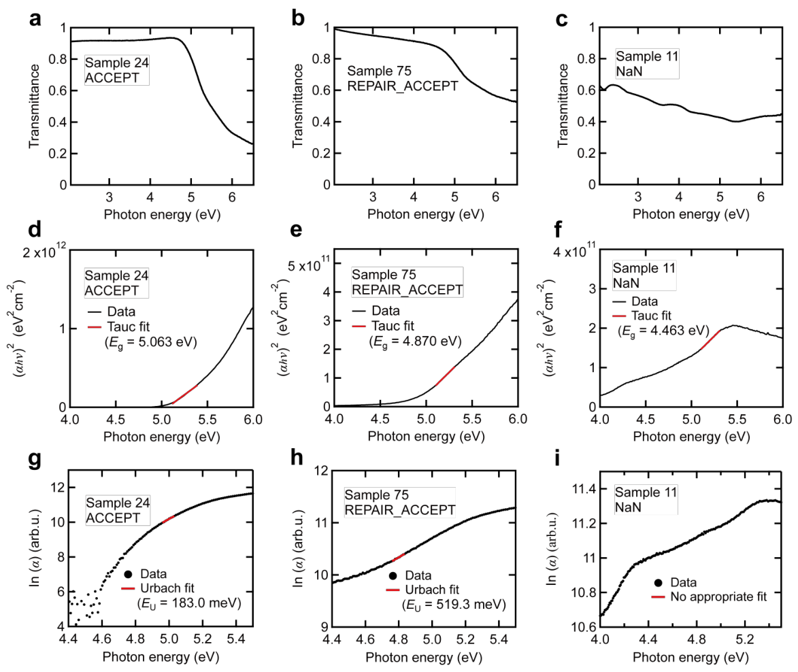

自动光谱分析：让智能体处理拟合例外，把表征数据接回自主实验
论文原文 ↗原文：Yuki K. Wakabayashi、Yui Ogawa，Autonomous adaptive spectral analysis with an LLM agent for self-driving laboratories，arXiv，2026。官方页面 ·
自主实验需要把“做出材料—测量—判断下一次实验”连起来。但仪器往往输出光谱或图像，优化算法需要的却是带隙、缺陷指标等数值。两者之间的分析脚本一旦失效，实验流程就常要停下来等研究者判断：是拟合窗口选得不合适，还是这条光谱本身就不适合提取目标量？
这篇工作的入口是 β-Ga₂O₃ 薄膜的透射光谱。作者给既有定量分析程序加上一层大语言模型智能体，让它查看原始谱形和拟合结果，决定保留结果、有限调整参数后重算，或者返回空值。研究主线是把材料表征中的科学判断做成可执行的异常处理流程。
从一条透射光谱，怎样得到薄膜的光学质量指标
β-Ga₂O₃ 是超宽禁带半导体。理想吸收边附近，材料从较透明逐渐转为强吸收；实际材料在带隙以下还会出现指数形式的吸收尾，称为 Urbach 尾。Urbach 能量 Eᵤ 描述这段尾部的展宽，在本文中用作薄膜光学质量指标。
输入是一份透射率随光子能量变化的 CSV 数据。作者使用此前自主溅射外延实验积累的 203 条光谱，样品在 c 面 Al₂O₃ 衬底上生长，原实验改变温度、射频功率和氧气、氩气流量。这里将这些归档光谱逐条送入独立会话，模拟新测量依次到来的分析情景。
数值程序先按 Beer–Lambert 近似，用透射率 T 和标称膜厚 55 nm 计算吸收系数 α，关系为 α≈−ln(T)/d。再作 Tauc 图：把直接跃迁关系中的 (αhν)² 对光子能量 hν 作图，拟合吸收边附近的直线并外推至横轴，得到带隙 Eɡ。这个 Eɡ 随后成为定位 Urbach 拟合窗口的参照。
接下来，在带隙以下作 lnα 对 hν 的图。如果这一段符合指数吸收尾，它就近似一条正斜率直线，斜率的倒数即 Eᵤ。因此整条计算链是：透射光谱→吸收系数→带隙位置→紧邻吸收边的指数尾→Urbach 能量。拟合窗口偏离这条吸收边，就可能把其他谱形误当作目标信号。
原脚本从 Eɡ−0.11 至 Eɡ−0.03 eV 的窗口开始搜索，至少要求 8 个数据点、正斜率和 R²≥0.995。R² 用来衡量直线对数据的拟合程度。初始窗口未通过时，脚本保持高能端不动、向低能侧逐步扩展，最大窗口宽度为 0.40 eV。这样的固定程序适于批量运行，但真实样品的谱形和噪声不总能落进预先设定的搜索规则。
智能体具体改什么，又怎样决定是否接受

图1｜每条光谱先运行原分析程序；智能体据谱形和拟合结果，选择保留、调整后重算或返回 NaN。
作者用 GPT-5.6 Sol 实现判断层。每次输入一条光谱和同一份原始分析程序；智能体可以执行程序、查看谱图与诊断数据，并对预设拟合参数作临时调整。每个样品从原始设置重新开始。
它首先检查吸收边是否清楚，以及拟合区域是否位于同一吸收边下方、是否呈现连贯的指数尾。然后结合拟合点数、能量跨度、残差和附近窗口的稳定性作判断。原结果成立时，直接保留，标记为 ACCEPT。
遇到可修复的失败，则尝试改变窗口位置、窗口宽度或拟合优度阈值，再由数值程序重新计算。这一步称为 REPAIR_ACCEPT。作者规定每条光谱最多尝试三次，Urbach 的 R² 门槛最低可放宽到 0.989，拟合窗口高能端与 Eɡ 的距离可在 0–0.08 eV 内调整。原始测量、Urbach 关系和目标量定义保持固定；每次调整都围绕原吸收边展开。
若这些调整仍无法得到受谱形支持的吸收尾，输出 NaN，也就是没有可报告的数值。这个分支直接关系到后续实验决策：材料优化需要知道哪些样品获得了有效指标，哪些样品需要另行处理。
主要结果：20 个失败分析中恢复了 16 个

图2｜原程序给出 183 个数值、留下 20 个失败项；智能体保留前者，恢复 16 个失败项，另外 4 个返回 NaN。
固定脚本在 203 条光谱中获得 183 个 Eᵤ，成功返回数值的比例约为 90.1%。智能体保留这 183 个原结果，对剩下的 20 条逐一处理，恢复了其中 16 条，使可返回数值的样品增至 199 条，即 98.0%。80% 的原失败项得到恢复，另 4 条得到明确的 NaN 结果。
16 个恢复案例的调整有具体分工：9 个仅放宽 R² 门槛，2 个仅移动窗口高能边界，1 个调整窗口宽度，其余 4 个联合调整边界和 R²。恢复来自对既有分析规则的局部适配，最终数值仍由同一类物理拟合计算产生。
为什么三种谱形会得到不同结论

图3｜三列分别为保留、修复后接受和 NaN；从上至下对应透射光谱、带隙拟合和 Urbach 尾拟合。
样品 24 的吸收边清楚，Tauc 拟合得到 Eɡ=5.063 eV。紧邻带隙下方的 lnα 近似线性，给出 Eᵤ=183.0 meV、R²≈0.997。略微移动窗口边界后，结果仍在 172.6–192.7 meV 范围内，智能体保留原值。
样品 75 同样有清楚的吸收边，Eɡ=4.870 eV，但原有窗口搜索未达到 R² 门槛。智能体把窗口高能端从 Eɡ−0.03 改到 Eɡ−0.01 eV，让拟合更靠近这条吸收边。重新计算得到 Eᵤ=519.3 meV、R²=0.99718；附近窗口给出 519.3–558.0 meV，经过一次调整即接受。
样品 11 则出现宽肩峰和多次斜率变化，缺少单一清楚的吸收边。Tauc 程序仍找到一段局部直线并给出 Eɡ=4.463 eV，但带隙下方的 lnα 持续弯曲。移动窗口和放宽阈值之后仍没有可接受的 Urbach 尾，最终返回 NaN。作者强调的判断依据在这里很直观：要沿着原始谱形理解拟合，不能只追求局部直线的高分。
这项工作对自主材料实验增加了什么能力
论文把“遇到异常就等人来处理”的分析环节拆成了可执行的三条路径：保留原结果、恢复可用测量、明确留下缺失值。它将研究者在谱图和拟合之间往返判断的部分工作，接进了实验数据处理链。
对材料自主实验而言，值得关注的是这种分工：物理模型和数值程序负责计算性质，智能体依据测量形态组织例外处理。作者提出，这能减少失败分析对实时人工干预的需求，并可接向重测、补充表征或缺失结果处理等后续策略。
原始摘要完整中文翻译
自主实验室通过自主闭环整合合成、表征与下一次实验选择，加快材料探索。然而，表征并不总能直接提供目标性质；测得的光谱或图像往往需要基于物理假设和预设判据的自动分析，才能提取定量描述符。这些流程可能在测量超出其判据时失效，此时需要判断能否恢复可靠数值，或者应当不报告数值。
本文实现了一个自主适应性光谱分析智能体，使用大语言模型监督确定性的数值分析程序。对每一条光谱，智能体执行预设分析脚本，并结合测量光谱和拟合诊断评估结果。有效结果原样接受；可恢复的失败通过对预设拟合参数作有界调整重新分析；当无法获得科学上可信的数值时，返回 NaN（非数值）。
我们使用此前自主薄膜生长实验中获得的 203 个外延 β-Ga₂O₃ 薄膜的光学透射光谱，评估了这一流程。预设光学分析脚本为 183 条光谱返回了 Urbach 能量这一光学质量指标，在另外 20 条上失效。智能体保留了这 183 个数值，并评估了 20 个例外案例，通过有界参数调整恢复了其中 16 个；在光谱证据不支持可靠 Urbach 尾的另外 4 个案例中返回 NaN。记录保存了每项决策对应的光谱特征、参数变化和理由。这些结果展示了由大语言模型智能体自主处理科学分析例外的能力，同时将定量性质提取交由确定性数值分析完成。